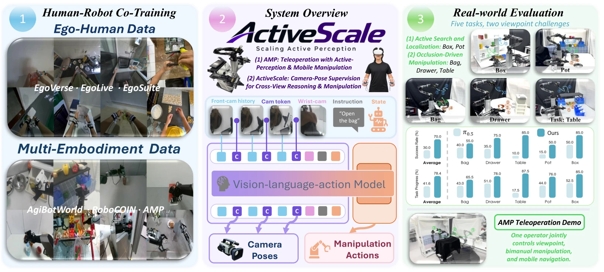

ActiveScale: Scaling Active Perception for Robots
across Model, Data, and Hardware
1 Robotics Institute, Carnegie Mellon University
2 The Hong Kong University of Science and Technology (Guangzhou)
Real-World Demonstrations
Bag
Autonomous rollout
Drawer
Autonomous rollout
Table
Autonomous rollout
Pot
Autonomous rollout
Box
Autonomous rollout
Abstract

Active perception is essential for robotic manipulation when fixed viewpoints leave task-relevant information occluded or unobserved. However, enabling vision-language-action (VLA) models to reason across changing viewpoints and actively acquire informative observations remains challenging. We present ActiveScale, a framework that advances active perception through coordinated model, data, and hardware designs. Our model augments a VLA with historical video observations and explicit camera-pose supervision, using per-frame pose tokens and a lightweight prediction head to associate observations across viewpoints and support a coherent understanding of the scene. To learn from the camera motion naturally present in human activity, we introduce a scalable human–robot mid-training recipe using 1000 hours of egocentric and robotic data, adapting the model to temporal inputs and pose supervision. We further introduce the Active Perception Mobile Manipulation Platform (AMP), a robotic platform that supports active perception and mobile manipulation through single-operator teleoperation, enabling scalable collection of demonstrations that coordinate viewpoint changes and manipulation. Experiments demonstrate improved success rates on active-perception tasks, while ablation studies validate the contributions of camera-pose-aware modeling and egocentric mid-training. Together, these components provide an integrated foundation for studying and developing active perception in robotic manipulation.
Contributions
Model · Pose-grounded Temporal VLA
We propose a pose-grounded temporal VLA for active perception and cross-view reasoning, achieving state-of-the-art performance across five real-world active-perception tasks.
Data · Human–Robot Mid-training
We propose a human–robot mid-training recipe using large-scale egocentric human and robot data. To the best of our knowledge, it is the first approach to scale active-perception training to 1000 hours of data—more than 5× larger than prior efforts. This recipe provides a scalable path for transferring human manipulation and active-view priors to robot policies.
Hardware · AMP
We develop AMP for active perception and mobile manipulation, enabling single-operator scalable collection of demonstrations that jointly coordinate viewpoint, bimanual manipulation, and mobility.
Key Results
π0.5: 30.0%
π0.5: 41.6%
20 rollouts per task and method
The complete ActiveScale pipeline is compared with directly post-trained π0.5, using the same task-specific post-training demonstrations and evaluation protocol.
AMP Platform

AMP extends AgileX Cobot-Magic with a third arm for the active camera, alongside two manipulation arms and a mobile base. A single operator uses Meta Quest 2 head and hand tracking to control the camera and arms, and controller buttons to move the base.
AMP Mobile Manipulation
Single-operator teleoperation
Model Architecture

Built on π0.5, ActiveScale combines the current front-camera image with three historical frames sampled at 16-frame intervals. A camera token for each frame receives pose supervision, helping the model connect observations across viewpoints. The action expert jointly predicts manipulation and active-camera motion; the auxiliary camera-pose head is removed at inference.
Learning Active Perception from Human
Stage 1 · Human–Robot Mid-training
We mid-train on 1000 hours of human and robot data at a 1:1 sampling ratio. EgoLive, EgoVerse, and EgoSuite (captured with EgoStandard Pro) provide egocentric human experience; AgiBot World, RoboCOIN, and AMP provide robot demonstrations. Robot data acts as a domain-adaptation anchor during mid-training, keeping the model from forgetting the manipulation skills already learned by the base VLA. Human video, in turn, is treated as a distinct embodiment, letting the model jointly learn active-perception behavior — coordinating viewpoint and action across changing views — from both human and robot experience. Action learning and camera-pose supervision then develop these manipulation and active-view priors across the combined corpus.
Stage 2 · Task-Specific Post-training
We adapt the model to AMP with task-specific teleoperation demonstrations, retaining the same architecture and joint action and camera-pose objectives.
Task Suite and Experimental Results

Task Suite and Evaluation
Bag, Drawer, and Table test manipulation under occlusion; Pot and Box test active search and localization across the workspace. We collect 150 demonstrations per task and evaluate each method with 20 real-world rollouts per task, scoring success rate (SR) for full completions and task progress (TP) for each completed stage.
Active Perception across Five Tasks
Under the same downstream demonstrations and evaluation protocol, ActiveScale improves mean SR from 30.0% to 70.0% and mean TP from 41.6% to 78.4% over directly post-trained π0.5. Both metrics improve across all five task families.

Ablation Studies
With the architecture and downstream training held fixed, mid-training raises mean SR from 62.0% to 70.0% and TP from 67.7% to 78.4%.

With post-training only, mean SR rises from 30.0% for π0.5 to 37.0% with history and 62.0% with history and pose-grounded camera tokens. Pose supervision improves both SR and TP over history alone on every task.

BibTeX
Citation for the arXiv preprint.
@article{zhou2026activescale,
title = {ActiveScale: Scaling Active Perception for Robots
across Model, Data, and Hardware},
author = {Zhou, Shuai and Pang, Kaisheng and Song, Wenxuan
and Zhang, Wenjie and Zheng, Xinhu and Li, Haoang},
journal = {arXiv preprint arXiv:2609.18514},
year = {2026}
}